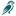

Soft and rounded, coral/teal/butter, with the owner's final marks.
Marks
Kestrel org mark
64px tall
32px tall
16px tall
Header and anywhere the organization appears.
Kestrel Gives event mark
64px tall
32px tall
16px tall
The bird holding the heart. For the Home hero and event moments.
Favicon
favicon-32.png

favicon-16.png
The org mark as-is, padded to a square. Detail is lost at 16px; a dedicated small mark could come later.
The owner's final marks, used exactly as supplied: cropped to the art and resized to 1x and 2x PNG. Not redrawn, recolored, or traced.
The white face and chest are part of the art, so the marks always sit on a light rounded tile in the art's own white (#FEFEFE). That includes dark mode, where the page stays dark around the tile. The event mark's file has its white background built in, so the hero is a light card in both modes.
Hero: the event mark, "Kestrel" in heavy teal, a hand-drawn rounded "gives" in heart coral with a small heart over the i, and a butter swash, as in the first version of this page.
Palette
Kestrel teal #036765 Sampled from the logo; text-safe (6.4:1)
Heart coral #F86256 Sampled from the logo; logo and wordmark only